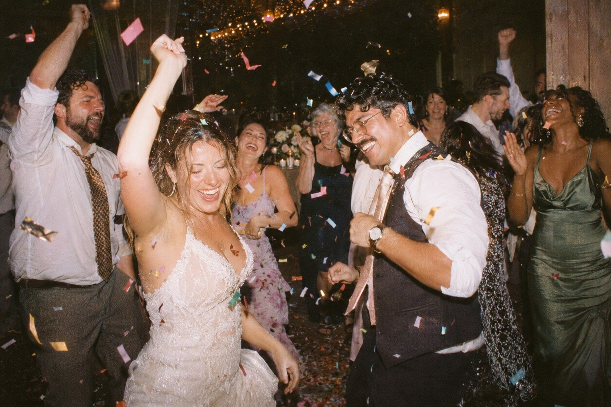
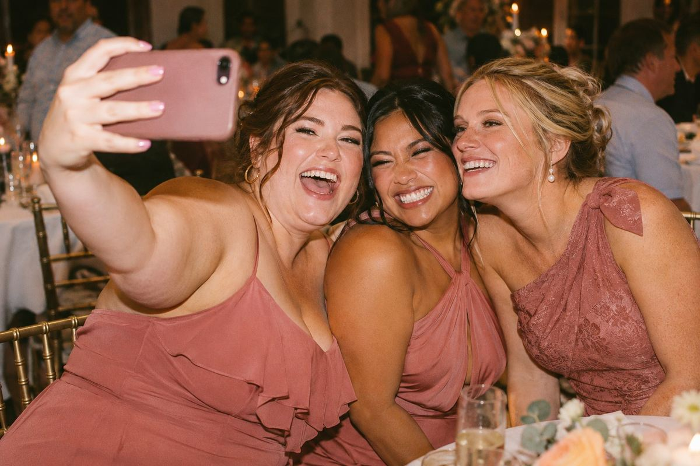

Wedding Hashtag Ideas: 70 Examples and a Backup Plan
Six formulas, 70 examples and the honest truth about what a hashtag can collect.

Short answer: The best wedding hashtag ideas are short, easy to spell and unused: a pun on your shared last name (#SetInStone for the Stones), your first names plus a phrase (#SamAndPriyaSayIDo), or names plus a year or place. Search it on Instagram and TikTok before you print it, and pair it with a private photo collection, because a hashtag only gathers public posts.
Below are six formulas and 70 wedding hashtag examples you can adapt, then the part many hashtag lists skip: what a hashtag can and can’t collect in 2026, and how to set up a backup so you actually get your guests’ photos. Every couple and name here is invented; swap in your own.
How to create a wedding hashtag: 6 formulas
Nearly every good wedding hashtag comes from one of these patterns. Try your names in all six, say the results out loud, and keep the two that make you laugh.
- Last-name pun. Find a phrase that already contains your last name, or something that sounds like it. Stone becomes #SetInStone; Hart becomes #HappilyEverHart.
- Merged names. Blend first names (Nora and Ravi make #Noravi) or both last names (Jones and Taylor make #TheJaylors).
- First names plus a wedding phrase. #SamWedsPriya, #PriyaPlusSam, #SamAndPriyaSayIDo.
- Names plus a date. Adding the year or date is the quickest way to make a taken hashtag unique: #SamAndPriya2027.
- Names plus a place. Great for destination weddings: #SamAndPriyaTakeTahoe.
- A phrase with a twist. “Getting hitched,” “tying the knot,” “Mr. and Mrs.” and song titles all bend around a name: #TyingTheKnotts.
If you’re stuck, ask your friends what they already call you as a couple. A nickname that’s been in the group chat for years often beats anything a generator spits out.
70 wedding hashtag ideas by style
Last-name puns
Find your last name (or the one you’ll share) and borrow the pattern.
- Hart: #HappilyEverHart
- Stone: #SetInStone
- Knott: #TyingTheKnotts
- Wright: #FinallyFoundMrWright
- Bell: #SavedByTheBells
- Glass: #RaiseAGlass
- Knight: #AKnightToRemember
- Hunt: #TheHuntIsOver
- Price: #WorthThePrice
- Moore: #MooreToLove
- Young: #ForeverYoungs
- Gold: #GoingForGold
- Rhodes: #AllRhodesLeadHere
- Wood: #KnockOnWoods
- Snow: #LetItSnow (a winter wedding)
- Summers: #EndlessSummers
- Bond: #BondedForLife
- West: #WildWildWests
- Nguyen: #ItsANguyenNguyen
- Lee: #HappilyEverLee
Common last name? Add a twist instead of fighting for the plain version: #MeetTheSmiths2027 or #SmithsOfSeattle.
Merged names
- Nora + Ravi: #Noravi
- Lucas + Ella: #TeamLucella
- Ben + Jenna: #Benna2027
- Mia + Theo: #Theomia
- Jones + Taylor: #TheJaylors
- Green + Smith: #TheGreensmiths
- Stone + Field: #TheStonefields
- Hill + Baker: #HillbakersUnite
First names plus a phrase
- #SamAndPriyaSayIDo
- #SamWedsPriya
- #PriyaPlusSam
- #SamAndPriyaTieTheKnot
- #PriyaSaidYesToSam
- #FinallyPriyaAndSam
- #HereComesPriya
- #SamAndPriyaForTheWin
Date and season
- #SamAndPriya2027
- #TheHarts0612 (June 12)
- #PriyaAndSam061227
- #FallingForSamAndPriya (an autumn wedding)
- #SamAndPriyaNYE2027 (a New Year’s Eve wedding)
- #SpookySamAndPriya (a Halloween wedding)
- #SamAndPriyaSummerOf27
Place and destination
- #SamAndPriyaTakeTahoe
- #PriyaAndSamInLisbon
- #SPHitchedInHawaii
- #SamAndPriyaDoNapa
- #VowsInVermontSP
- #SayIDoInSedona27
- #TheHartsHeadNorth
Getting hitched, Mr. and Mrs., and other phrases
- #TheHartsGetHitched
- #HitchedAndHappyHarts
- #BigFatPatelWedding
- #MrAndMrsHart
- #MrAndMrHart
- #MrsAndMrsHart
- #OfficiallyTheHarts
- #TheHartsSayIDo
- #WeStillDoHarts (a vow renewal)
Funny ones
- #SamFinallyPutARingOnIt
- #OffTheMarketSam
- #PriyaLockedItDown
- #NoTakeBacksSamAndPriya
- #SamAndPriyaOpenBar
- #PriyaGotSammed
Short ones for small weddings and tiny signs
- #SamPri27
- #TheHarts27
- #SPWedding
- #HartsDay
- #SPSayIDo

How to check that a wedding hashtag is unused (and readable)
Before the hashtag goes on a single napkin, run it through this list:
- Search Instagram. Type the full tag, with the #, into search. Zero posts is ideal. A handful of old posts from another couple usually means you should add your year or initials.
- Search TikTok, Facebook and Google. Put the tag in quotes on Google. You’re looking for anything you wouldn’t want your photos sitting next to.
- Read it in all lowercase. Words run together in a hashtag, and some combinations spell something unintended. Ask a friend with a dirty mind to check.
- Capitalize each word. #SamAndPriyaSayIDo is easier to read than #samandpriyasayido. Digital NSW’s accessibility guidance also says capitalizing the first letter of each word improves readability for screen readers.
- Leave out punctuation. Hashtags break at spaces and most punctuation, so drop apostrophes, hyphens and ampersands. Numbers are fine.
- Keep it short. Aim for under 20 characters, 25 at most. If people have to look at the sign twice to type it, it’s too long.
- Say it out loud. If you have to spell it for your grandmother, simplify it. Unusual spellings of names get mistyped, and a mistyped tag is a lost post.
Do wedding hashtags still work in 2026?
Yes, as a fun extra. No, as your plan for collecting photos. A hashtag can only show you what guests choose to post publicly, and several things keep many wedding photos out of that window:
- Private accounts don’t show up. Instagram’s Help Center says that when a private account adds a hashtag, the post won’t appear on the corresponding hashtag page. Every guest with a private profile is missing from your hashtag, and you’ll only see their posts if you already follow them.
- Stories disappear. Photos and videos shared to an Instagram story disappear after 24 hours unless the person saves them as a highlight. If guests post the night in their stories, much of it is gone by brunch.
- You can’t follow your own tag. Instagram told Social Media Today in November 2024 that it was removing the ability to follow a hashtag, while hashtags can still be used and searched. You’ll have to search for yours by hand.
- Captions now have a hashtag cap. In December 2025 Instagram said it would gradually limit captions on posts and reels to five hashtags. Your tag competes with whatever else a guest wants to add.
- Posts are the highlights, not the roll. Even when you find a guest’s post, it’s the few edited favorites they chose to share, not everything still sitting on their phone.
The details differ from app to app, but the pattern holds everywhere: a hashtag is a public bulletin board, not a shared folder. That makes it good for a playful sign, a theme for your own posts and an easy way to find the public ones later. It isn’t a way to collect everything.
Pair your hashtag with a private photo collection
The fix is simple: keep the hashtag, and give guests a second, private place for all their photos. Put both on the same sign, with the private option first, because it’s the one you care about:
Share the love
[QR code] Scan to add all your photos to our private album.
Posting too? Tag it #SamAndPriyaSayIDo
For the private half, you have three broad options: a shared album (Google Photos or iCloud), an upload folder, or a guest camera app that guests join with a QR code. Our guide to free wedding photo sharing covers the no-cost ones and their limits, and the full comparison of ways to collect photos from wedding guests weighs all of them. For sign layouts and 45 ready-made lines, see our wedding QR code sign wording guide.
Where to use your wedding hashtag (and where not to)
- Your wedding website. Put it on the FAQ page next to how to share photos.
- The welcome sign and the photo booth. As a second line under the QR code, or on a small sign of its own by the booth.
- Cocktail napkins, cups and the bar sign. Cheap, fun and seen by everyone.
- Your own posts. Use it on your engagement announcement and save-the-date post so friends see it early.
- Your captions afterward. If you post a recap or a photo dump, our list of photo dump captions pairs well with your tag.
Skip it on the ceremony program if you’re asking for an unplugged ceremony; a hashtag there reads as an invitation to post during the vows. And don’t print it on the formal invitation itself. A details card or the website is plenty.
Filmsera as the private half of your hashtag
Filmsera is built for that private half. You create a wedding film in the iPhone app, guests scan its QR code and shoot from their own phones, and every photo goes into one shared roll. Guests can join and shoot from their phone’s browser, with no app or account, or in the free Filmsera app on iPhone.
Every film is invite-only, so only people in it see its photos. Nothing is visible while guests shoot, not even to you. At the reveal time you pick, the whole film appears at once for everyone in it, each photo tagged with who took it, so the bridesmaid selfie that would have vanished from a story stays in the album.

Your hashtag still gets its moment. At the reveal, Filmsera builds a short vertical recap reel set to music. Save it to Photos or share it through the iOS share sheet to Instagram, TikTok or anywhere else, and put your hashtag in the caption. As of November 2026, free recaps export at 480p with a Filmsera watermark; HD (1080 × 1920, no watermark) comes with Filmsera Pro or a film pass for that film.

Honest limits: the host needs an iPhone (iOS 17 or later), browser guests take photos only, and a recap is usually a 10-to-30-second reel, not a full slideshow. More on how it works at a reception is on our Filmsera for weddings page.
Filmsera keeps every guest’s photos in one invite-only film until the reveal, then builds a vertical recap you can post with your hashtag. Get Filmsera on the App Store
FAQ
What makes a good wedding hashtag?
A good wedding hashtag is short (under about 20 characters), easy to spell after hearing it once, and not already used by another couple. Puns on your last name, your first names plus a phrase, or your names plus the year all work. Capitalize each word so it’s easy to read, and leave out punctuation, which breaks hashtags.
How do you make a wedding hashtag with your last name?
Look for a phrase that already contains your last name or something that sounds like it: Stone gives #SetInStone, Hart gives #HappilyEverHart, Knott gives #TyingTheKnotts. If your name is very common or hard to pun on, add a twist instead: “Meet the,” “Officially the” or the year, as in #MeetTheSmiths2027.
Do wedding hashtags still work?
They work for finding public posts, and they’re fun on signs. They miss a lot of wedding photos, though: posts from private accounts don’t appear on hashtag pages, stories disappear after 24 hours, and Instagram no longer lets you follow a hashtag. Use one alongside a private shared album or guest camera, not instead of it.
How long should a wedding hashtag be?
Aim for under 20 characters and treat 25 as the limit. Guests type it from a sign, often in dim light with a drink in the other hand, so every extra word is a chance to misspell it. If your favorite idea runs long, shorten the names to initials or drop the filler words.
Can you see wedding hashtag posts from private accounts?
Not through the hashtag. Instagram says that when a private account adds a hashtag, the post won’t appear on that hashtag’s page. You’ll see it only if you already follow that person, in your own feed. So a hashtag alone can miss many of your guests’ photos, which is why a private album or shared camera works better for collecting them.
Written by the Filmsera team
Filmsera is a shared disposable camera app for iPhone: create a film for your event, let guests join by QR code from the app or their phone's browser, and open the whole roll together at the reveal. Download on the App Store →
Photos in this article are illustrations created for Filmsera, not customer photos. App screenshots are from Filmsera on iPhone.